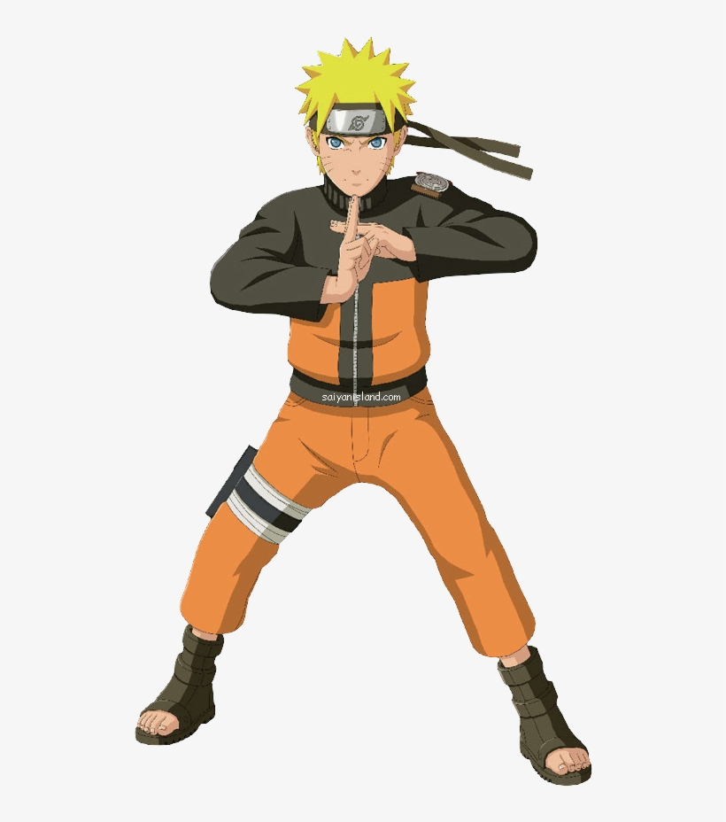
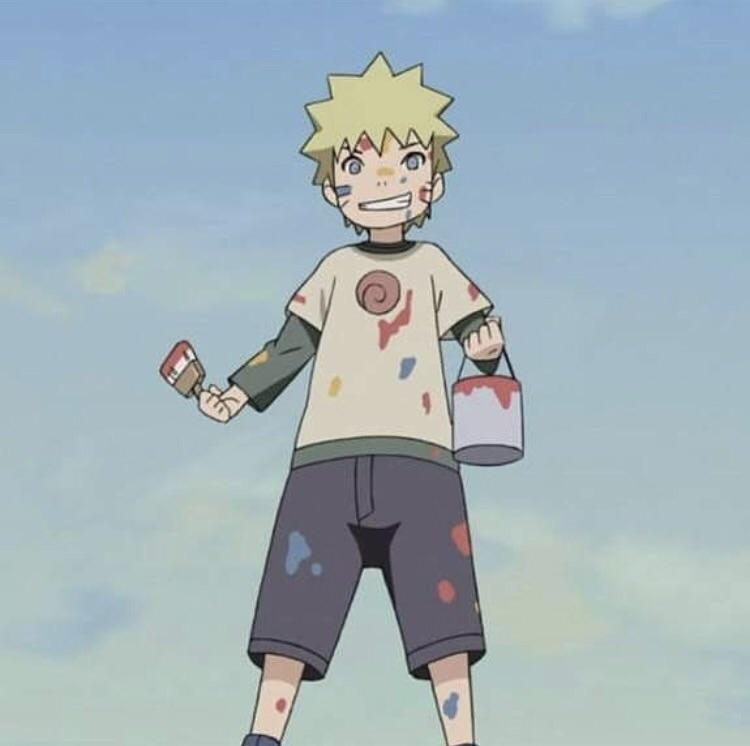
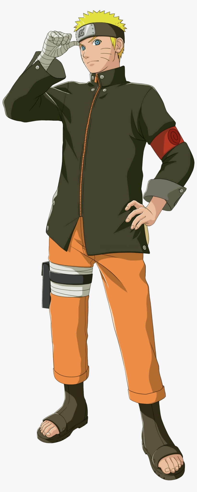

Naruto is generally a very simple minded, easy going, cheerful person. He often rushes things and is not observant to the little things. Naruto is also known for his catchphrases "Believe it!" and "Ya know"
In the beginning of the series, Naruto is very fun loving, often pulling pranks on fellow villagers. This usually ends in a scolding from Iruka Umino. Naruto later reveals he did these pranks because he liked the attention, as he grew up with no parents or friends. He's also very beginning when he's young, despite being largely unskilled in comparison to his peers.
As the series progresses and Naruto gets older, he eventually starts to become more serious and wises up. As a Jinchūriki bearing the Nine Tailed Fox, Kurama, Naruto was often jeered at and avoided by most villagers. Because of this, Naruto was largely alone in the early parts of his life, and would often seek out attention by pulling pranks. This would become Naruto's main reason want to become Hokage, so everyone in the village would acknowledge and respect him. Eventually, Naruto's actions towards saving the village (And even the whole world) lead to many villagers respecting and even admiring him. In the movie, Naruto: The Last, Naruto has fans who come from all different villages just to see him.
